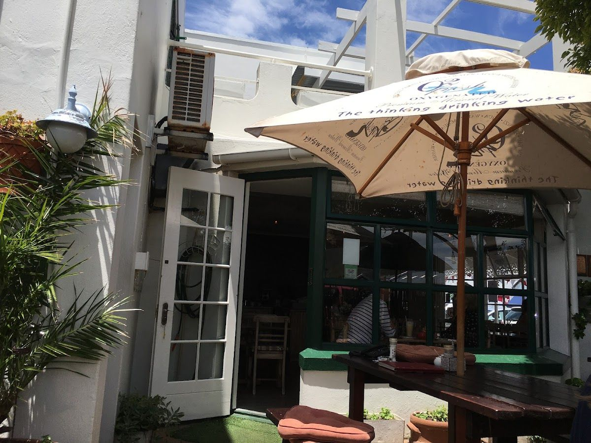
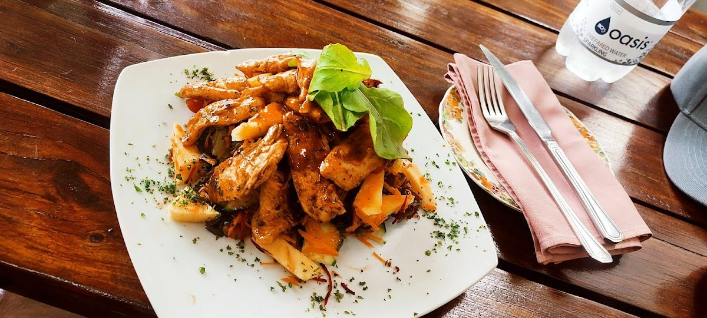
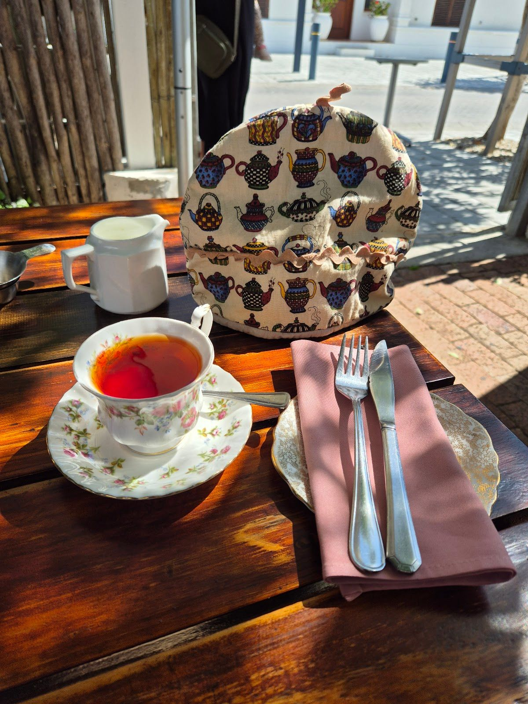
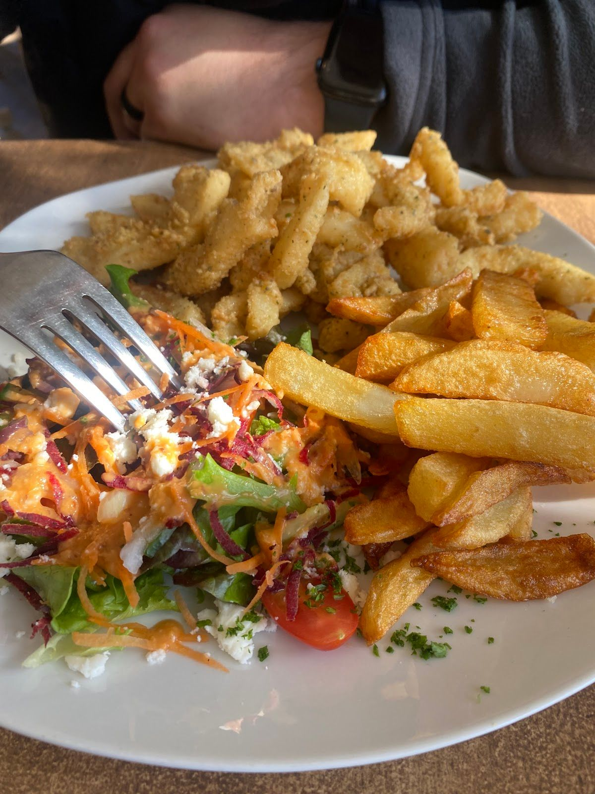

The Cuckoo Tree is a beloved restaurant nestled in the heart of Hermanus, serving the community with a unique blend of traditional charm and modern culinary excellence. Our establishment is housed in a beautiful semi-Victorian building, offering a perfect backdrop for a dining experience filled with warmth and character.
Our story began with a simple idea: to create a space where people can gather to enjoy delicious food and genuine hospitality. Over the years, we have become a staple in the local dining scene, known for our hearty dishes and welcoming atmosphere. Whether you are a local or a visitor, we strive to make you feel at home.
At The Cuckoo Tree, we believe in the power of good food to bring people together. Our menu is crafted with care, featuring dishes that celebrate local ingredients and timeless recipes. We are committed to providing each guest with a memorable dining experience, guided by our core values of quality, integrity, and community.
Discover our delightful offerings that cater to every palate, ensuring a memorable dining experience.
Indulge in our carefully crafted menu featuring classic dishes with a modern twist, all prepared with fresh local ingredients.
Enjoy a selection of comforting beverages, from rich coffees to soothing teas, perfect for any time of day.
Relax in our semi-Victorian setting that offers a unique ambiance, making every visit special and unforgettable.
Here is what our clients say about us.
"Went for dinner with my partner. Home cooked type of menu with hearty dishes. Think slow cooked meat and 2 veg. These dishes are absolutely brilliantly executed, super tasty and served with a friendly chat. I had the lemon meringue pie for desert Homemade and delicious. Well worth visiting."— Ian Johnston, ⭐⭐⭐⭐⭐
"Fantastic menu and our food excellent. I had lambs liver,mash, union and peas and my wife quiche of the day. The service fantastic. Will become regulars. Back again and fantastic every time"— Abie Marais, ⭐⭐⭐⭐⭐
"Thoroughly enjoyed our lunch here. The lovely garden seating is very tranquil, we all enjoyed our meals. Mom can't stop talking about how fresh and delicious her fish was. We had great conversation and fun interaction w Michelle. Wish we live nearby, we'd be here regularly!!"— Phoenix Grant, ⭐⭐⭐⭐⭐
"Such a lovely experience. Good food, friendly hosts! And an excellent fresh veggie juice. Can’t wait to be back ✨"— Sharne Geel, ⭐⭐⭐⭐
"🌟🌟🌟🌟🌟 If you're ever in Hermanus and looking for a vintage, cozy, and quiet lunch spot—look no further. I asked ChatGPT for just that, and it led us straight to this little gem. Spot on! From the moment my mom and I stepped inside, we were wrapped in the kind of warmth you don’t often find—like visiting an old friend’s home on a rainy day. The air smelled of freshly brewed coffee and something hearty and savoury from the kitchen—grilled onions, simmering sauces, and comfort in the making. Every corner seemed to tell a story. The iced cappuccino was rich, creamy, and comforting—the kind of drink you sip slowly, just to make it last. The burger? Homemade patty, thick and juicy, covered in your choice of fresh, flavourful sauce. Crispy-on-the-outside, fluffy-on-the-inside chips, and a salad that was anything but an afterthought—bursting with colour, crunch, and brightness. But then came dessert... and wow. We couldn’t choose just one, so we didn’t. We shared their famous lemon meringue, a gooey brownie, a generous scoop of ice cream and cream, and the most incredible warm roasted almond tart—sweet, nutty, and perfectly comforting. If nothing else, go for that tart. I promise it’ll stay with you long after the last bite. The owner and her mom (the chef!) made us feel right at home—welcoming, kind, and clearly proud of the experience they’ve created. Whether it’s a chilly, misty Hermanus afternoon or a golden sunny day, this place just works. Highly, highly recommend."— Johleen Taljaard, ⭐⭐⭐⭐⭐




We'd love to hear from you — reach out to us anytime.